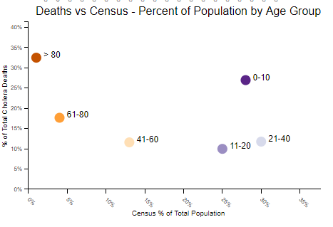
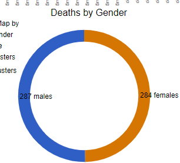
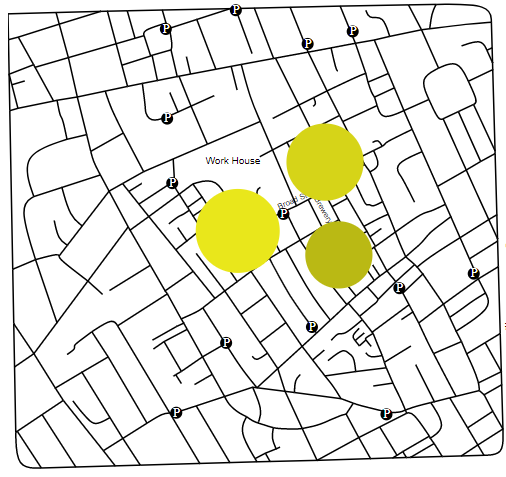

The first instinct I had was for the map to be on the left side of the view. Being the most unique view along with being the first item on the left my thought was this would immediately set the context of the dashboard for the user. Ideally, a person lands on the dashboard and quickly understands that this visual is a map and the legend lets them know we are mapping water pumps and humans.
I toyed with the idea of making the map or the roads have more prominent colors, but I felt it made the map look disconnected from the rest of the view. With the lines of the map black and the background white I thought it made it clearer that all 4 views were connected.
Colors for gender were chosen starting with Color Brewer. I knew I need colors that we’re easy to differentiate and color blindness friendly. Color Brewer suggested an Orange/Blue combination in the diverging section, and I applied it, however, I found it was too light of an Orange and Blue to be on a white background, so I made them more solid and that worked out nicely.
Colors for Age Groups were also chosen starting with Color Brewer. My first thought was trying a sequential color range but since the two most common age groups to die were the very young and very old I thought a diverging color range would help those two categories stand out while still maintaining an intuitive sequential nature.
Clusters were calculated using a KMeans algorithm in Python. I generated data for numbers of clusters between 1 and 7 and put them in a file called deaths_age_sex_clusters.csv. The coloring of the clusters matches the bar chart color range so the user should make the connection that brighter colors indicate higher amounts of deaths.
Bar Chart
If the Map starts the context of a map of humans and water pumps, the Bar Chart then tells users that people were dying due to an outbreak. Because I thought this was the logical next step in telling the story, I put it just to the right of the map as the 2nd largest view. For the color range I used something like what I found in the textbook that scales the color by intensity. The first step of my color choice thought process was avoiding blue and orange because I didn’t want to confuse the user into thinking it meant male vs female like the other chart. After that, I just tried a few color ranges to see what I thought fit in. Red stood out too much, green looked okay, but yellow seemed to fit in nicely.
For the layout of the bar chart I kept it as a traditional bar chart and added tooltips so users could see the exact number by hovering. I also added a radio button that lets the user change the bar chart to a cumulative view because I think that better represents the trend as an outbreak.
Donut Chart
I think pie and donut charts are appropriate when the number of dimensions is low; so, I thought it would add some variety and offer a clear representation of the mix of gender amongst the victims. The color range choices match those from the map, so gender uses consistent colors across the dashboard. The positioning I chose was based on available space. I felt the map view and bar chart needed to be in the most prominent positions because they set the context for the user to see additional breakdowns from the donut chart and scatter plot.
Scatter Plot
I knew that I needed something by age group and my first instinct was another bar chart showing deaths by age group. However, once I saw that census data from the same time period was provided, it seemed like a better idea to join the two sources together so victim age groups could be viewed relative to their census population. The color choice was the same as the map to give consistency to the age dimension across the dashboard. The positioning choice was for the same reason as the donut chart.
Findings using the visualization:
One thing that seemed substantial was that people over 80 represent around 1% of the population but account for greater than 30% of the victim population. The 61-80 age group have a similar but not as extreme number of victims relative to their census stats.

Gender does not seem significant. Additionally, if you filter to different points in time the gender mix stays even throughout the whole outbreak.

Although the default map does a good job of visually tying deaths to pump locations, I think the clusters do even better. For example, with three clusters, the pump closest to the center of each cluster is the Broad St pump.
